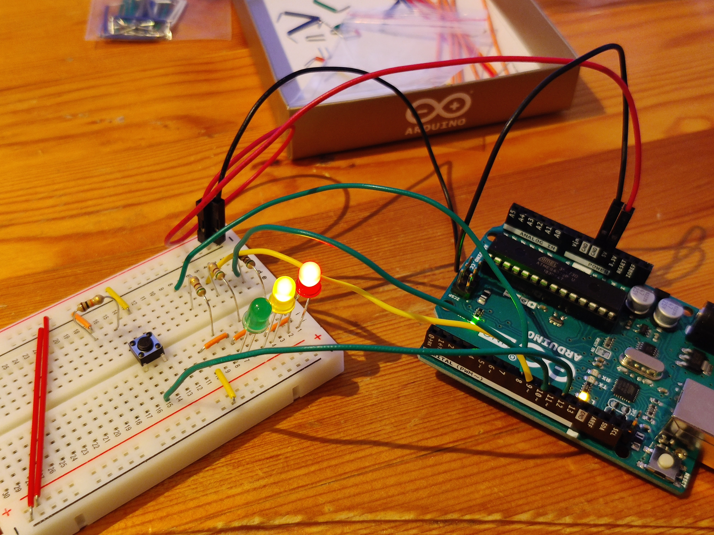
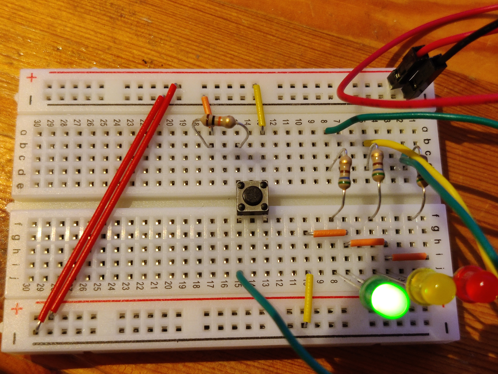
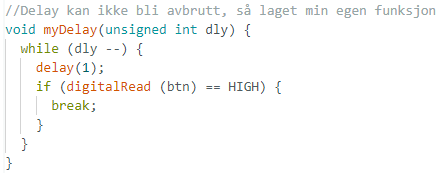
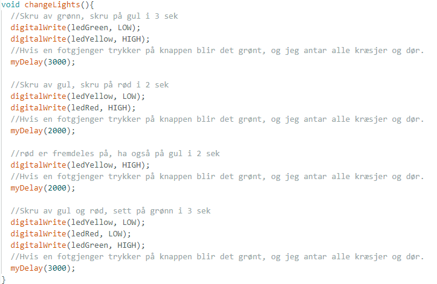

Prosjekt 2 (Oppgave3)
Elektronikk ( Arduino Livsfarlige Trafikklys )
Elektronikk er et relativt stort tema i emnet, men selv om det absolutt er et tema man kunne gjort mye morro med må jeg si jeg har slitt med å motivere meg selv til denne oppgaven.
Ettersom jeg også er ganske optatt av Bacheloroppgaven også bestemte jeg meg for å sikte mot minimum arbeidskrav denne gangen. Målet mitt ble å finne en simpel tutorial, og se om jeg kunne sette min egen spinn på den eller forbedre den.
Trafikklys prosjektet mitt er basert på en tutorial som bruker startingkittet på nette, men jeg har forandret funksjonaliteten ved å legge til en ekstra funksjon.
Trafikklys med livsfarlig Stoppeknapp 
Dette er arbeidsfilen fra Arduino sitt IDE
Last ned sketch ino-filTutorial Steget
Jeg begynte altså med å finne en tutorial basert på starter kittet, slik at jeg skulle være sikker på at jeg hadde alle de nødvendige delene. Dette viste seg senere å ikke stemme, men fant en løsning på det.
Tutorialen var delt opp i to steg; Det første gikk bare ut på å sette opp tre led lys, og programmere en sekvens med pauser for lysene. På dette stadiet fant jeg ut at starter kittet mitt ikke har noen 220 OHM resistorer, som er det jeg er vandt til å bruke for å beskytte led lys. Etter litt googeling og leting i kittet mitt fant jeg at de svakeste resistorene jeg hadde var 560 OHM resistorer, som tydligvis ikke er helt galt for å brukes for led-lys beskyttelse -så jeg benyttet disse.
Med en gang resistorene var på plass fungerte koden med en gang.
Steg 1 ser slik ut:

I steg 2 skulle man legge til en knapp med en såkalt "pulldown resistor" slik at hvis pinen leser "LOW" fra inputten til knappen betyr det at den IKKE er trykket på, istedenfor at den ikke tar noe strøm i det hele tatt. Dette gjøres for å unngå falske lesninger av knappen hvis opsettet opplever elektroniske forstyrringer.
Hensikten med knappen var å kunne stoppe lysene på grønt, og la de stå der i noen sekunder før de gikk vidre. Men koden til prosjektet hadde et stort problem;
Steg 2 ser slik ut:

Koden
I steg 2 av tutorialen fant jeg fort ut at siden koden bruker "delay()" funksjonen vil ikke programmet greie å lese knapp-inputet til brukeren når det skjer, så brukeren må holde inne knappen helt til det blir grønt naturlig igjen.
Siden dette skjer fordi delay funksjonen stopper hele programmet bestemte jeg meg for å skrive om delay funksjonen -slik at en bruker kunne kalle grønt lys med en gang.
Dette ville selvsagt vert helt tullete med ekte trafikklys, men det er der jeg har lagt lista for denne oppgaven.
Min Funksjon

Her kan jeg sende in en mengde millisekunder å ha den pause så lenge, men hvis den leser et tastetrykk så avslutter den umiddelbart. Funksjonen min bruker delay funksjonen, men den pauser kun absolutt i ett tusenedels sekund.
Her bruker funksjonen changeLights myDelay for å pase mellom lysbyttene i trafikklys-sekvensen.
Det er nå jeg begynner å angre litt på at jeg ikke har filmet dette, men jeg leverer jo koden og opsett av elektronikken -så resultatene er forhåpentligvis godt nok bevist.
Ser mer fram til å kunne kombinere alt dette til noe litt mer spennende.